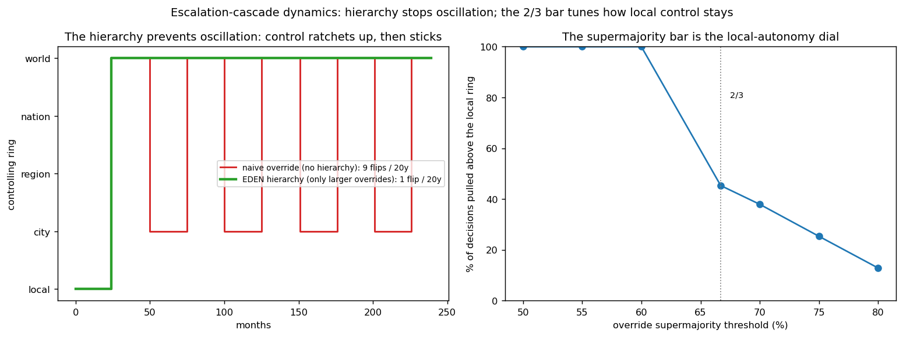

In plain language
Companion to RESULTS - Governance Cascade Dynamics. Companion added July 11, 2026 — the v1–v5-era runs predate the plain-language convention; written from the committed RESULTS as it stands today (including any verification-pass corrections already applied in that file), with no reinterpretation.
The question
In EDEN's federated design, a larger ring of people can override a smaller ring's decision — and a still-larger ring can re-override that. The natural worry: does a contested decision ping-pong between rings forever?
What we found
No — and the hierarchy itself, not the timelock, is the reason. Under a naive rule where any ring that musters a supermajority can flip the current policy, one contested decision flips ~110 times over 20 years with no timelock (a 24-month timelock only slows that to ~9). Under EDEN's rule — only a larger ring can override, and its decision stands unless an even larger ring steps in — the same decision flips exactly once: control ratchets up to the largest ring holding a durable supermajority and sticks, settling at the level that matches the externality's scope, which is the intent. The timelock's job is deliberate, visible latency — not stability.
The supermajority bar turns out to be the local-autonomy dial. At a simple majority, essentially 100% of local decisions can be pulled up to a larger ring — local control evaporates and the system centralizes. At 2/3, 45% get pulled up (more than half stay local); at 75%, 25%; at 80%, 13%. The bar trades local self-determination against a wider community's ability to correct genuine spillovers; 2/3 is a defensible setting, and it could even rise per escalation ring.
A fix this surfaced
Overrides should require a sustained supermajority across the timelock — a confirmed mandate, not a single winning vote. In the noisy runs, a ring with only ~64% genuine support still escalated eventually, because some month's vote randomly cleared 2/3 and the sticky override locked in. Requiring the supermajority to hold through the window makes the threshold a real gate, and pairs with the turnout-quorum finding from the v2 model — both guard against transient or marginal mandates becoming permanent.
The honest catch
Stylized and illustrative: preferences are fixed and rise monotonically with ring size, while real issues have shifting, non-monotone preferences and active coalition-building — none modeled. Nor is who classifies a decision's scope (which ring is even entitled to vote — itself a governance act and attack surface), vote-buying, or inter-ring bargaining.
One line
The override ladder converges instead of oscillating because control only moves up, never back down — one flip instead of ~110 — and the 2/3 supermajority is the dial that keeps more than half of decisions local, with one fix surfaced: make the supermajority hold through the whole timelock, not just one lucky month.
Words used here (added July 18, 2026 — plain-language house rule; the text above is unchanged). Federated — organized as nested, semi-independent units rather than one global body. Ring — one of those nested voting communities — a neighborhood inside a city inside a region inside the world; a "larger ring" is the wider community containing the smaller one. Supermajority — a bar well above half (2/3 here); the dial that sets how hard it is to pull a decision upward. Timelock — a mandatory waiting period before an override takes effect; its real job here is visible delay, not stability. Externality — a decision's spillover onto people outside the group making it; the ladder is meant to settle each decision at the ring matching its spillover's reach. Quorum — the minimum turnout for a decision to count. Monotonically — always moving in one direction as ring size grows, never zig-zagging — a tidy assumption real opinions won't obey. Stylized — deliberately simplified to the moving parts that matter; the finding is the shape, not the digits.
Figures

Technical results
Tests the natural worry about the federated override design: if a larger ring can override a smaller one (and a still-larger ring can re-override), does it ping-pong forever? Short answer: no — and the reason is the hierarchy itself. Files in this folder.
The setup
A single contested decision: the local default (policy A) vs what wider rings prefer (B), where support for overriding to B rises with ring size (the wider the ring, the more the local choice spills onto it). Each month support and turnout are noisy; a ring can override after a timelock if it musters the supermajority. We compare:
- Naive override — any ring that musters the supermajority against the current policy can flip it.
- EDEN's hierarchy — only a ring larger than the current controlling ring can override, and its decision stands unless an even larger ring overrides it (control can move up the hierarchy, never back down).
Finding 1 — The hierarchy prevents oscillation
Policy flips over 20 years (2/3 supermajority, 50% quorum):
| Rule | with 24-month timelock | with no timelock |
|---|---|---|
| Naive override (no hierarchy) | ~9 | ~110 |
| EDEN hierarchy (only larger overrides) | 1 | 1 |
A naive "anyone can override" rule oscillates badly — a small ring that strongly prefers A keeps pulling the decision back while a large ring that prefers B keeps pushing it, ~110 flips over 20 years without a timelock (and a timelock only slows it to ~9). EDEN's hierarchy collapses that to a single flip: control ratchets up to the largest ring that holds a durable supermajority — here, the world — and then sticks, because no smaller ring can re-override a larger ring's standing decision and no larger ring exists. The decision settles at the level that matches the externality's scope, which is exactly the intent (fig_cascade.png, left). Notably, the hierarchy — not the timelock — is what stops the oscillation; the timelock's job is deliberation latency (changes take time and are visible), not stability.
Finding 2 — The supermajority bar is the "local-autonomy dial"
How often a local decision gets pulled up to a larger ring, as a function of the override threshold:
| Override threshold | % of decisions pulled above the local ring |
|---|---|
| 50% (simple majority) | 100% |
| 60% | 100% |
| 2/3 (66.7%) | 45% |
| 70% | 38% |
| 75% | 25% |
| 80% | 13% |
At a simple-majority bar, essentially every local decision can be pulled up to a larger ring — local autonomy evaporates and the system centralizes. At 2/3, more than half of decisions stay local; higher bars protect local control further. The drop is sharp once the bar exceeds the strongest sub-global ring's support — the threshold must clear that for local decisions to be safe from that ring. So the supermajority isn't just a safety margin; it is the dial that trades local self-determination against the ability of a wider community to correct a genuine externality. 2/3 is a defensible setting; the design could even raise it per escalation ring (harder to override the wider the community).
A design recommendation this surfaced
Overrides should require a sustained supermajority across the timelock — a confirmed mandate, not a single winning vote. In the noisy dynamic runs, a ring with only ~64% genuine support still escalated eventually, because over a long horizon some month's vote randomly cleared 2/3 and (being sticky) the override locked in. Requiring the supermajority to hold through the timelock (re-confirmed, or maintained for most of the window) makes the threshold a real gate and stops marginal-support rings from escalating on a lucky month. This pairs with the turnout-quorum finding from the v2 model — both are guards against transient or marginal mandates becoming permanent.
Net
The cascade is stable by construction: the only-larger-can-override hierarchy plus decision stickiness make ping-ponging structurally impossible — control ratchets up to the externality-matched ring and stops. It is tunable: the supermajority bar sets how strongly local autonomy is protected versus how easily a wider community can correct spillovers. And the timelock adds deliberate, visible latency. Together they answer the worry directly: the escalation design converges; it does not oscillate.
Honest limits
Stylized and illustrative. Preferences are fixed and monotone in ring size (real issues have non-monotone, shifting preferences and active coalition-building, none modeled). It doesn't model who classifies a decision's scope (which ring is even entitled to vote — itself a governance act and attack surface, flagged in the v2 brief), vote-buying, or inter-ring bargaining. "Escalation" in Finding 2 is measured on genuine/sustained support, consistent with the recommendation above. Audience: governance designers.
Files
cascade_sim.py— the federated cascade with the naive-vs-hierarchy comparison and threshold sweepfig_cascade.png— control over time (oscillation vs settling); the local-autonomy dialresults_cascade.json— flips and escalation figures
Raw data